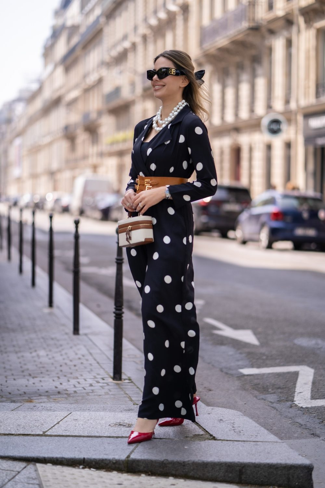
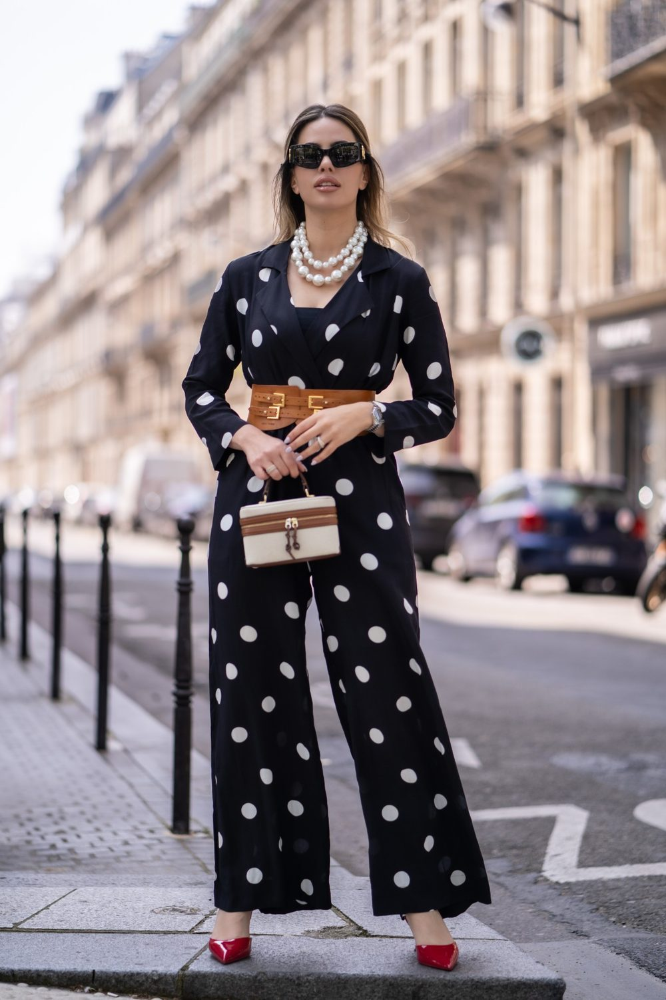
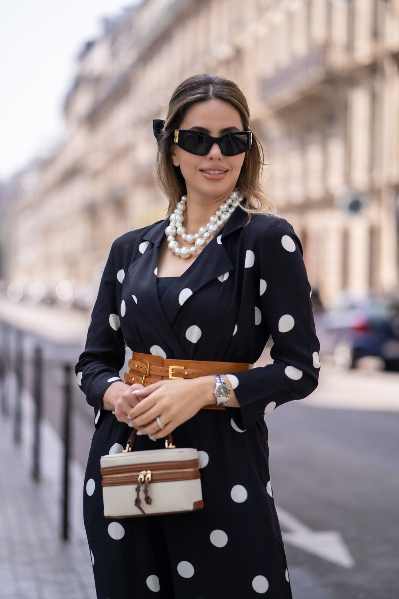
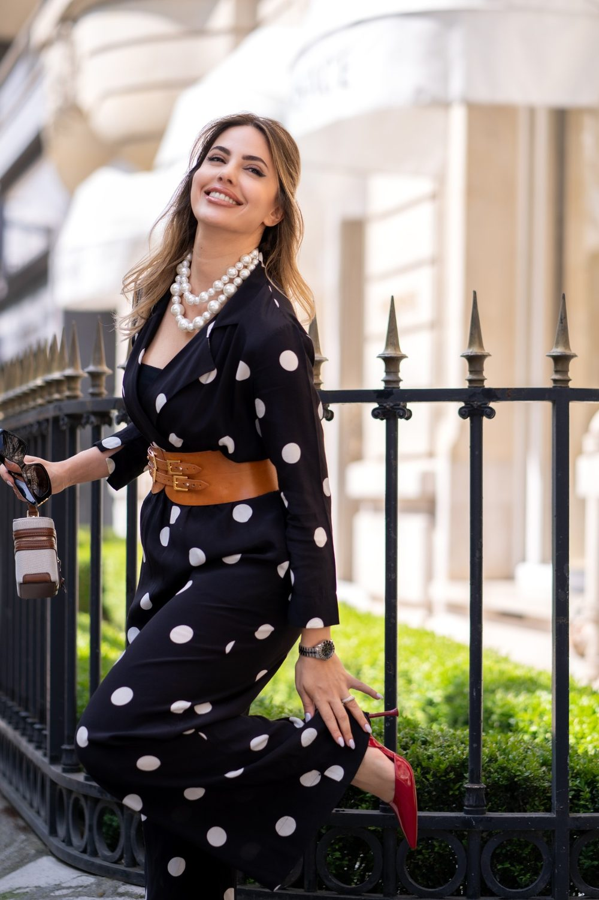

Portrait solo à Issy-les-Moulineaux
Moderne, aéré, avec de grands espaces verts. Un portrait de vous, pour vous : un beau jour, une envie, un cap passé. Une séance solo se vit comme une promenade où vous reprenez la place centrale. Nous vous proposons de commencer à Fort d'Issy, puis de poursuivre à Parc de l'île Saint-Germain.

Où faire votre shooting
Pour un portrait solo à Issy-les-Moulineaux, trois décors se succèdent : le Fort d'Issy, les Bords de Seine et le Parc Henri-Barbusse. Dans les chemins du parc du Fort d'Issy, vous marchez vers l'objectif ou vous vous adossez, regard au loin. Sur une passerelle des Bords de Seine, le portrait devient plus urbain, cheveux dans le vent. Après un changement de tenue, le Parc Henri-Barbusse accueille une série intime près du bassin. Quelques plans au ralenti complètent votre portrait pour vos réseaux.
Sur place
Moderne, aéré, avec de grands espaces verts. Le parc de l'île Saint-Germain est très lumineux en milieu d'après-midi.
La séance sert aussi pour un book d'artiste, une présence en ligne, un profil de réseaux ou simplement un cadeau pour vous-même. Une courte vidéo façon portrait filmé met en scène votre voix, votre énergie.
Venez avec deux ou trois tenues dans un sac léger : le métro Mairie d'Issy permet de rejoindre le centre et de vous changer facilement entre deux spots. Un temps couvert adoucit la peau sur les bords de Seine, ne le craignez pas.
À Issy-les-Moulineaux, vous êtes à Tram T2 Issy-Val de Seine, Métro Mairie d'Issy : nous préparons l'itinéraire entre les lieux avec vous.
Nos lieux pour cette séance
Fort d'Issy
Ancien fort transformé en parc. Une grande façade ou un monument pour un portrait plus graphique.
Parc de l'île Saint-Germain
Sculptures et grandes pelouses. Un jardin ou un parc pour un portrait doux et lumineux, avec de la verdure derrière vous.
Parc Henri-Barbusse
Jardin avec bassin et collines.
Bords de Seine
Promenade et passerelles.




Avant de nous écrire
Où faire un shooting portrait solo à Issy-les-Moulineaux ?
Pour un shooting portrait solo à Issy-les-Moulineaux, le Fort d'Issy offre un cadre vert et structuré, les Bords de Seine un style urbain et le Parc Henri-Barbusse une ambiance intime. Nous choisissons ensemble selon l'image que vous voulez donner.
Je suis mal à l'aise devant l'objectif, une séance solo à Issy est-elle adaptée ?
Une séance solo à Issy-les-Moulineaux convient aussi aux personnes mal à l'aise devant l'objectif : elle se vit comme une balade où nous parlons et marchons. Dites-nous ce que vous aimez ou non dans votre apparence, nous adapterons les cadrages.
Comment venir à Issy-les-Moulineaux ?
Tram T2 Issy-Val de Seine, Métro Mairie d'Issy. Nous nous déplaçons avec notre matériel photo et vidéo.
Livrez-vous des retouches poussées ?
Nous faisons une retouche naturelle. Une retouche plus poussée peut être discutée sur devis.
Parlons de votre mariage
Demander un devisSolo ailleurs en Île-de-France
© Le Couple Photographe · Photographe de mariage Paris & Île-de-France · Mis à jour le 10 octobre 2026
Demander un devis